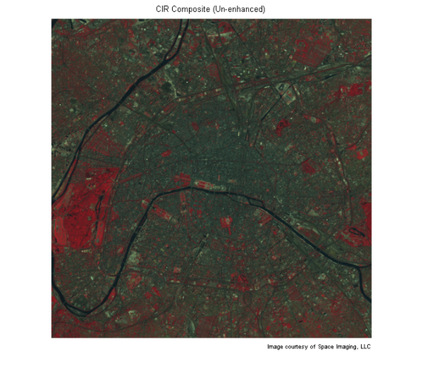
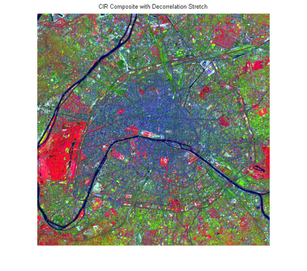
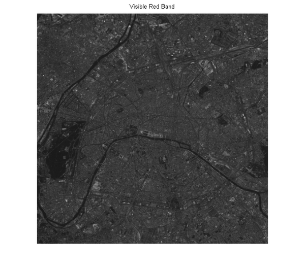
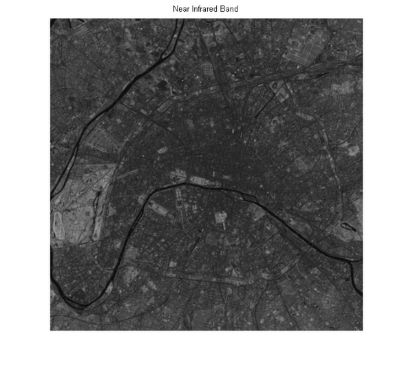
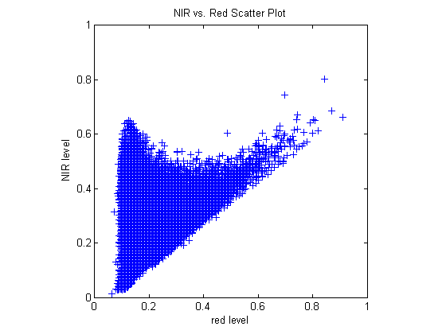
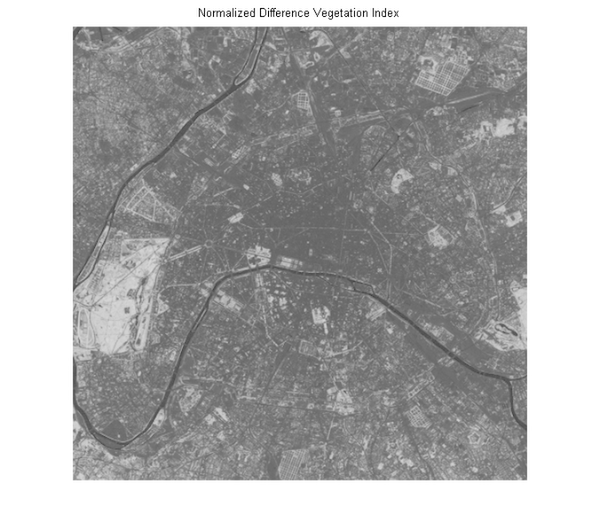
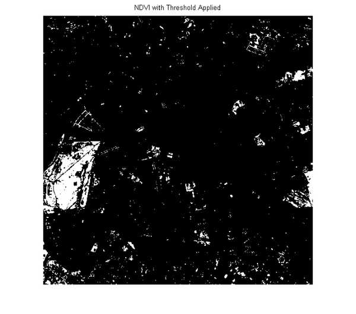
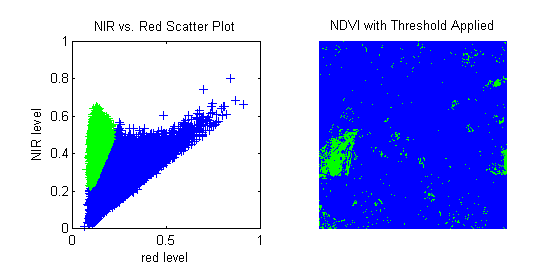

マルチスペクトル イメージ内の植生を検出
異なるスペクトル バンドに沿った表面物質の反射率の変化は、遠隔測定されたマルチスペクトルイメージ内の特徴を理解するための基本的な機能を与えます。
この例は、有意な植生を含む領域を識別するのに使われる LANDSAT イメージの可視赤色光と、近赤外線 (NIR) バンド間にどのような違いがあるかを示します。Space Imaging, LLC の利用可能なサービスである、フランス、パリの一部を網羅する LANDSAT Thematic Mapper イメージを使用します。7 つのスペクトル バンドは Erdas LAN 形式の 1 つのファイルに保存されます。
目次
手順 1:BIL イメージ ファイルからの CIR 帯域のインポート
LAN ファイル paris.lan には、7 帯域の 512×512 の Landsat イメージが含まれています。128 バイトのヘッダーにはピクセル値が続きます。これは、帯域番号の昇順のライン挟み込みバンド並び (BIL) です。リトルエンディアンの順番で符号なし 8 ビット整数として保存されます。
最初の手順では、MATLAB® 関数 multibandread を使用して LAN ファイルから帯域 4、3、および 2 を読み込みます。
Thematic Mapper 4、3、および 2 帯域は、 電磁スペクトルの近赤外線(NIR)、可視赤色光、および可視緑色光の部分を網羅します。それぞれが RGB イメージである赤、緑、および青の平面にマッピングされる場合、その結果は標準のカラー赤外 (CIR) 合成イメージになります。multibandread への最後の入力引数では、読み取る帯域と、その順序を指定します。そのため、1 ステップで合成イメージを作成できます。
CIR = multibandread('paris.lan', [512, 512, 7], 'uint8=>uint8',... 128, 'bil', 'ieee-le', {'Band','Direct',[4 3 2]});
変数 CIR はクラス uint8 の 512×512×3 の配列です。これは RGB イメージですが、疑似色を持っています。イメージを表示する場合、赤は NIR 帯域、緑は可視赤色光帯域、青は可視緑色光帯域をそれぞれ示します。CIR イメージでは、水は非常に暗い特徴を持ち (セーヌ川)、緑の植生は赤く見えます (公園および街路樹)。全体的に見て、コントラストは低く、色は薄くなっています。
figure imshow(CIR) title('CIR Composite (Un-enhanced)') text(size(CIR,2), size(CIR,1) + 15,... 'Image courtesy of Space Imaging, LLC',... 'FontSize', 7, 'HorizontalAlignment', 'right')
手順 2: 無相関ストレッチによる CIR 合成イメージの強化
これは、CIR 合成イメージの解析の前に、より効果的なイメージ表示を得るための強化に役立ちます。 元の合成イメージでの淡い色の差異のため、無相関ストレッチが適しています。 関数 decorrstretch を使用できます。これは、相関があるチャンネルの全域にわたる色の分離を強化でき、また、オプションの線形コントラストのストレッチを指定して、各帯域の 1% の最も明るいピクセルと最も暗いピクセルを飽和させることもできます。
decorrCIR = decorrstretch(CIR, 'Tol', 0.01); figure imshow(decorrCIR) title('CIR Composite with Decorrelation Stretch')
表面特徴はより明確になり、イメージはよりカラフルになっています。これは、表示全域のスペクトル差異が誇張されており、コントラストが増加しているためです。
イメージの外観の多くは、元気でクロロフィル豊富な植生が近赤外線で高い反射率を持つという事実によります。NIR 帯域は合成イメージの赤いチャンネルにマッピングされるので、植生密度が高い領域はディスプレイに赤く表示されます。注目すべき例は、セーヌ川の湾曲部内のパリ中心部の西側に位置する大きな公園 (ブーローニュの森) である左端の明るい赤の領域です。
NIR と赤い帯域間の差異を解析することにより、このコントラストを、植生地域とその他の外見 (路面、露出土壌、建物、水など) の間のスペクトル量で定量化できます。
手順 3:NIR-Red スペクトル散布図の構築
NIR 帯域(赤で表示) と可視赤色光帯域 (緑色で表示) を比較する場合、散布図から始めます。これは、これらの帯域を元の CIR 合成イメージから抽出し、独立した変数にするのに便利です(無相関ストレッチが行われたイメージは視覚的な表示には適していますが、スペクトル解析には適していないため、元の帯域に戻ります)。これはまた、散布図だけでなく、以下の NDVI 計算でも同じ変数を使用できるので、クラス uint8 をクラス single に変換するときにも役立ちます。
NIR = im2single(CIR(:,:,1)); red = im2single(CIR(:,:,2));
差異を見比べるため、2 つの帯域を一緒にグレースケール イメージとして表示します。
figure imshow(red) title('Visible Red Band') figure imshow(NIR) title('Near Infrared Band') 
MATLABでの plot コマンドを呼び出すだけで、赤い帯域の値により決定されるその X 座標と、NIR 帯域の値による Y 座標と共に、1 ピクセルに 1 つの点 (この場合は青い十字) を表示する散布図を作成できます。
figure plot(red, NIR, '+b') set(gca, 'XLim', [0 1], 'XTick', 0:0.2:1,... 'YLim', [0 1], 'YTick', 0:0.2:1); axis square xlabel('red level') ylabel('NIR level') title('NIR vs. Red Scatter Plot')
パリの景色の散布図の外観は、青葉がある温暖な市街地を特徴としています。NIR と赤の値がほぼ等しい対角線の近くに一連のピクセルがあります。この "グレーの境界" には、路面や多数の屋根などの特徴が含まれています。上側と左側は、多くの場合に NIR 値が赤の値をかなり上回る別の一連のピクセルです。このゾーンは、基本的にすべての緑の植生を取り囲みます。
手順 4:MATLAB® 配列演算による植生インデックスの計算
散布図から、NIR レベル対赤のレベルの比率を読み取ることが、密集した植生を含むピクセルを位置付ける方法の 1 つであることに気付きます。ただし、その結果は、両方の帯域の小さな値を持つ暗いピクセルについてはノイズを含みます。また、NIR と赤の間の差異は、クロロフィル密度が高いほど大きくなることに注意してください。正規化植生指標 (NDVI) は、この 2 番目の観察によって変動します。これにより (NIR - Red) 差異を読み取って正規化し、雲や丘など一様ではない照度の効果を釣り合わせるのに役立てます。つまり、ピクセルごとに、赤い帯域の値を NIR 帯域の値から減算し、その合計で除算します。
ndvi = (NIR - red) ./ (NIR + red);
MATLAB の配列算術演算子により、1 つの簡単なコマンドだけで、NDVI イメージ全体を計算することが可能になることに注目してください。変数 red および NIR にはクラス single があることを思い出してください。この選択により使用されるメモリ量はクラス double より少ないですが、整数クラスとは異なり、結果の比率で値の滑らかなグラデーションを推測することも可能です。
変数 ndvi は、理論上の最大範囲が [-1 1] であるクラス single の 2 次元配列です。ndvi をグレースケール イメージとして表示すると、これらの理論上の制限値を指定できます。
figure imshow(ndvi,'DisplayRange',[-1 1]) title('Normalized Difference Vegetation Index')
セーヌ川は、NDVI イメージでは非常に暗く表示されます。イメージの左端付近の大きな明るい領域は、前述の公園 (ブーローニュの森) です。
手順 5:植生の配置 -- NDVI イメージのしきい値処理
多くの植生を含んでいる可能性が最も高いピクセルを特定するには、単純なしきい値を NDVI イメージに適用します。
threshold = 0.4; q = (ndvi > threshold);
したがって、選択したピクセルの割合は以下のようになります。
100 * numel(NIR(q(:))) / numel(NIR)
ans =
5.2204
つまり、約 5% になります。
公園や植生の他の小さな領域は、論理 (バイナリ) イメージ q を表示したときに、既定で白く表示されます。
figure
imshow(q)
title('NDVI with Threshold Applied')
 手順 6:スペクトル量と空間情報のリンク
スペクトル量と空間情報をリンクするには、しきい値より上のピクセルを NIR-Red の散布図に配置します。これにより、しきい値より上のピクセルを持つ散布図が対照的な色 (緑) で再描画され、しきい値 NDVI イメージが同じ青緑色のスキームで再表示されます。予想どおり、しきい値より上の NDVI 値を持つピクセルは、その他のピクセルの左上に現れ、CIR 合成イメージ表示のより赤いピクセルと一致します。
% Create a figure with a 1-by-2 aspect ratio h = figure; p = get(h,'Position'); set(h,'Position',[p(1,1:3),p(3)/2]) subplot(1,2,1) % Create the scatter plot plot(red, NIR, '+b') hold on plot(red(q(:)), NIR(q(:)), 'g+') set(gca, 'XLim', [0 1], 'YLim', [0 1]) axis square xlabel('red level') ylabel('NIR level') title('NIR vs. Red Scatter Plot') % Display the thresholded NDVI subplot(1,2,2) imshow(q) set(h,'Colormap',[0 0 1; 0 1 0]) title('NDVI with Threshold Applied')
decorrstretch、im2single、ipexlanstretch、multibandread も参照してください。